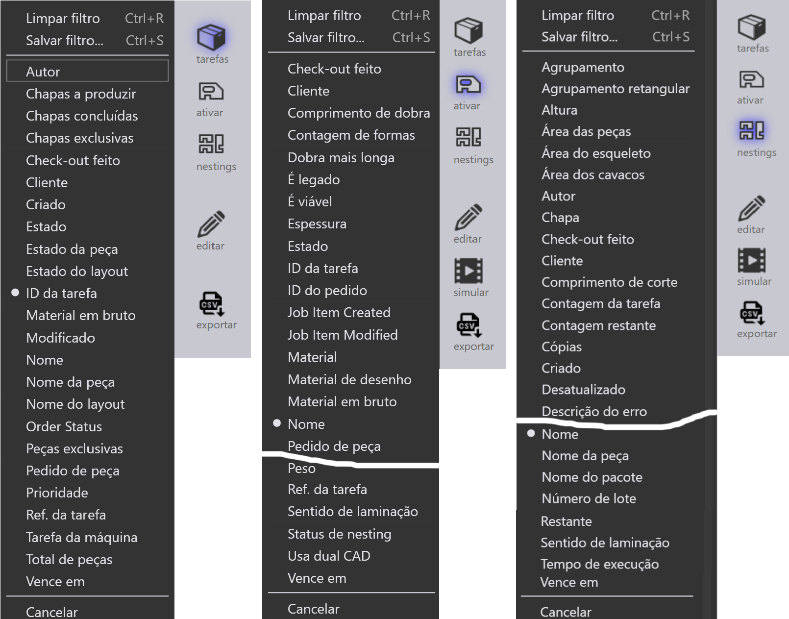
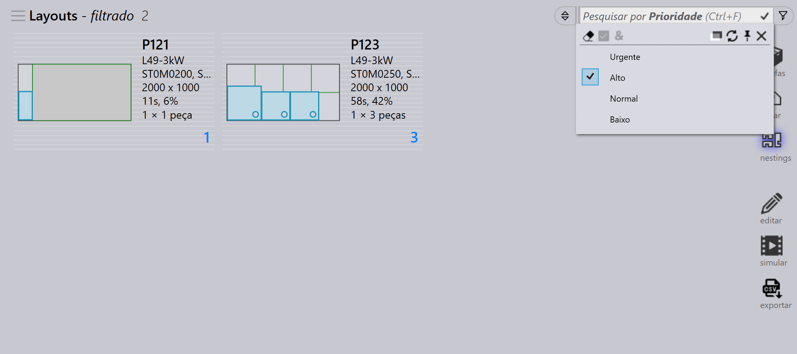
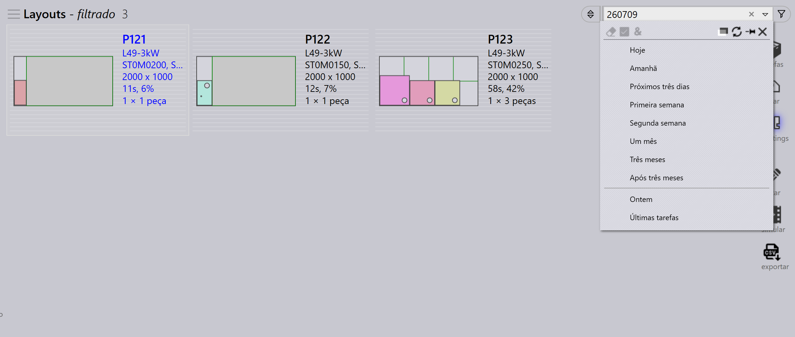
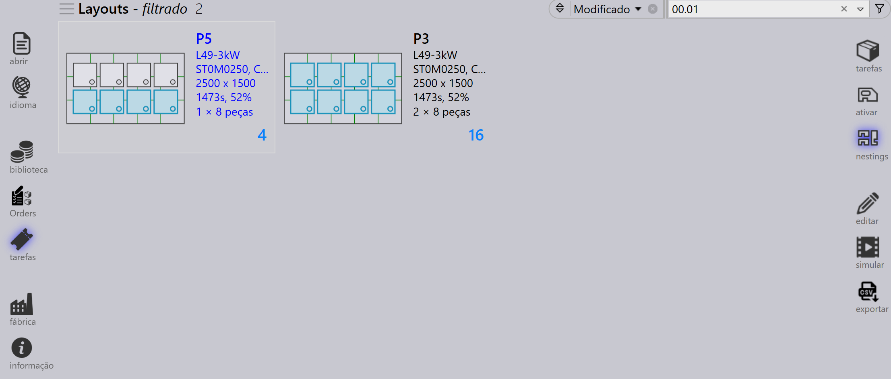
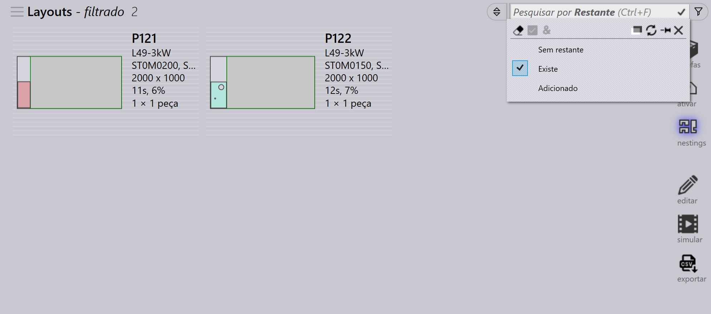

Filtros de tarefa
Os filtros da página Tarefa ajudam a localizar Tarefas, Peças Ativas e Nestings exibindo apenas itens que correspondem às condições selecionadas. Eles simplificam a busca, classificação e gerenciamento de tarefas ou peças, melhorando a eficiência geral no fluxo de trabalho.

Exemplos de filtros disponíveis
Prioridade e Vence em
-
O filtro Prioridade permite pesquisar e exibir peças ou tarefas com base na prioridade atribuída (Urgente, Alto, Baixo, Normal).
-
Quando você seleciona um nível de prioridade específico, apenas as peças com essa prioridade específica serão destacadas ou exibidas nos resultados.
-
Por exemplo, se você escolher Prioridade Alto, o sistema filtrará e destacará apenas as peças marcadas como Alta Prioridade no nesting.

-
O filtro Vence em permite pesquisar e exibir peças ou tarefas com base nas datas atribuídas.
-
Quando você seleciona uma data de entrega específica, apenas as peças com essa data de entrega específica serão destacadas ou exibidas nos resultados.
-
Além dos filtros de data de entrega pré-definidos como Hoje, Ontem, Amanhã etc., você também pode inserir valores/intervalos de datas personalizados no formato yymmdd na caixa de texto de pesquisa.
-
Você também pode usar expressões com operadores de desigualdade (<, <=, >, >=, =) seguidos do valor da data. Exemplo: >=250901 pesquisaria todos os itens com data de entrega em ou após 1º de setembro de 2025.

|
Se a lista de filtros ocultar o conteúdo de pesquisa, você pode torná-la
transparente usando o comando Alternar a opacidade|*Clique direito com o mouse*
|
Nome da peça/ Layout name
-
O filtro Nome da peça estará disponível nas páginas de tarefas e nesting.
-
Conforme você digita o nome da peça, uma lista de sugestões é exibida para ajudar a selecionar a peça correta rapidamente.
-
Selecionar um ou mais itens da lista de sugestões restringe os resultados da pesquisa apenas às peças selecionadas.
-
Na página Jobs, esse comportamento é estendido para incluir Nomes de Layout, permitindo que os usuários pesquisem por nome da peça ou nome do layout.

Restante
-
Use o filtro Restante para pesquisar layouts com base na disponibilidade de retalhos.
-
O menu suspenso exibe as seguintes opções:
-
Sem restante - lista layouts onde nenhum retalho foi criado.
-
Existe - lista layouts onde um retalho já existe.
-
Adicionado - lista layouts onde um novo retalho foi adicionado.
-
-
Ajuda a identificar e gerenciar materiais de chapa restantes de forma eficiente.
